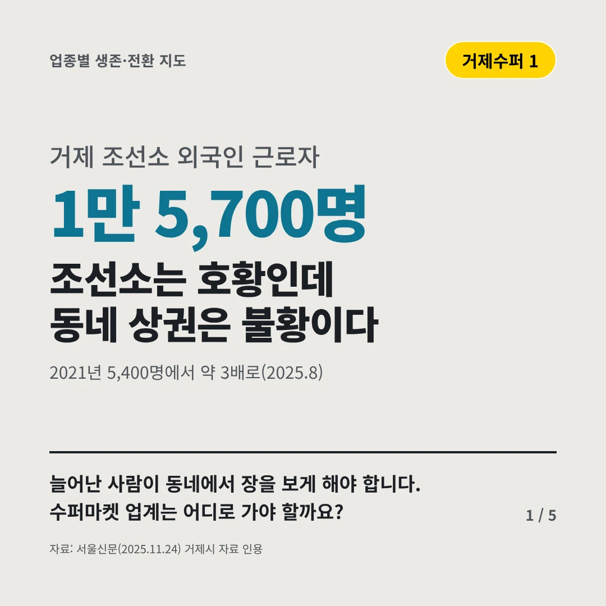
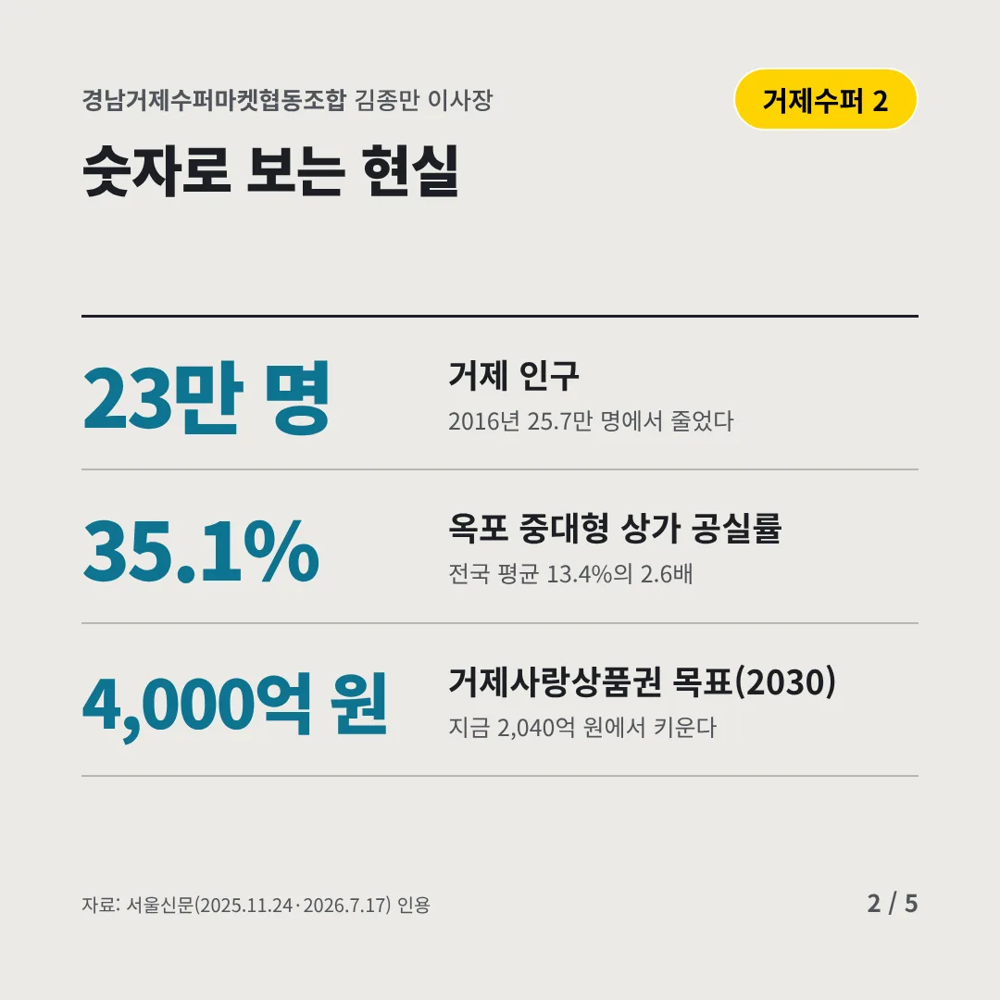
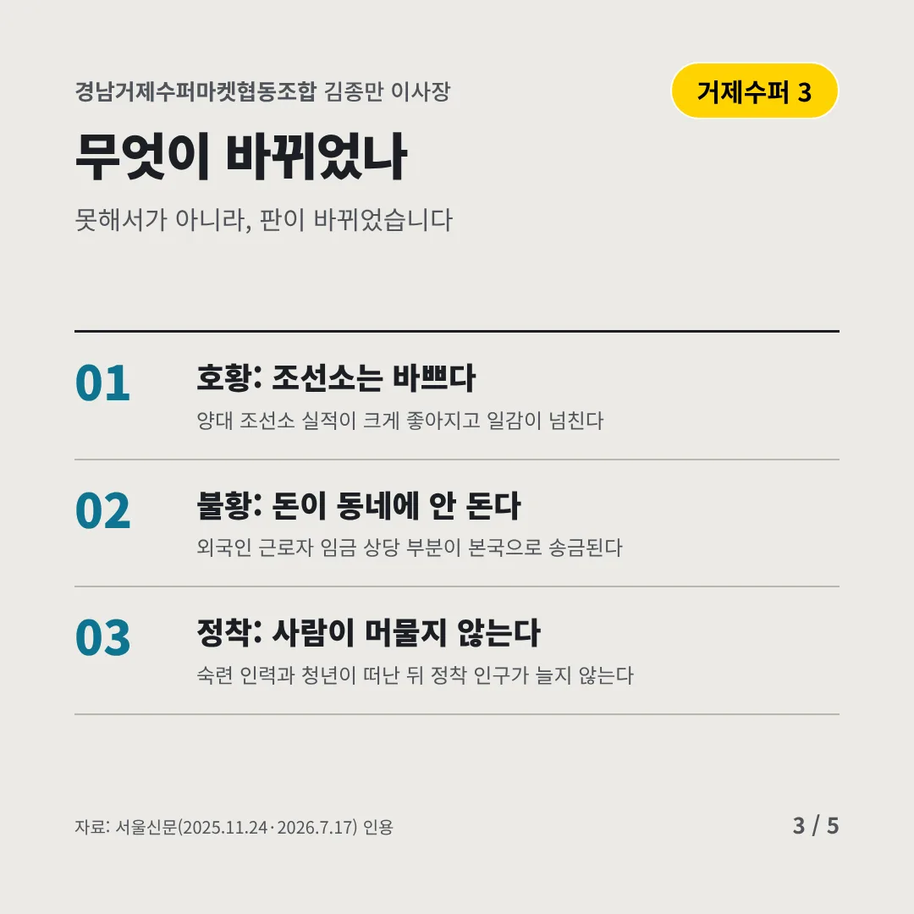
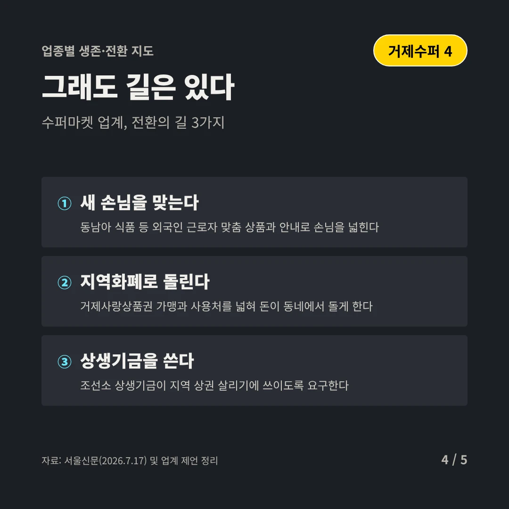
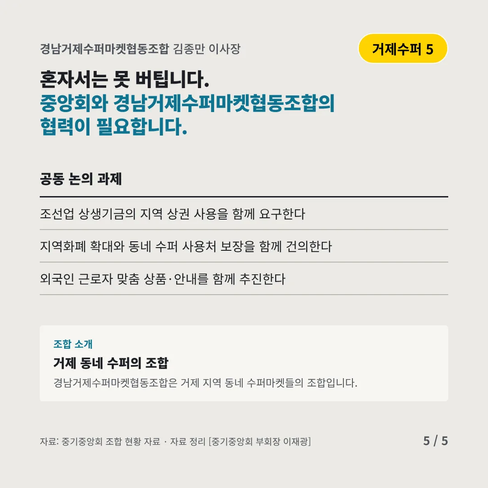
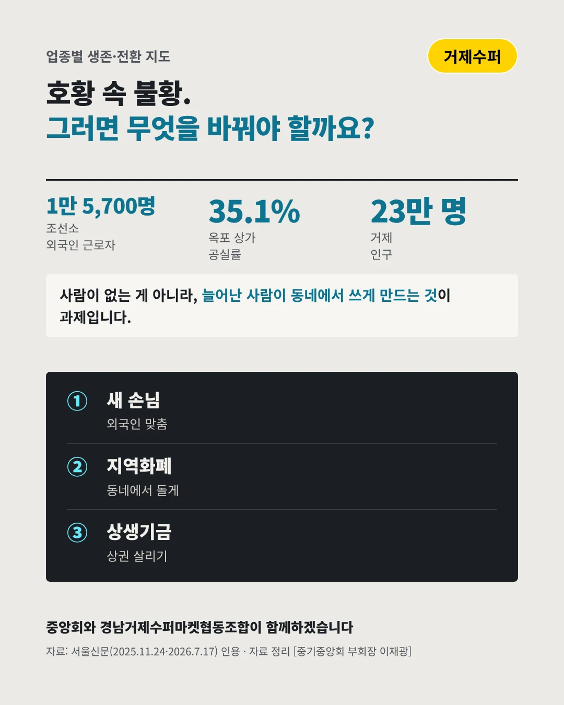

경남거제수퍼마켓협동조합김종만 이사장
조선소는 호황인데 동네 상권은 불황이다
1만 5,700명 거제 조선소 외국인 근로자






늘어난 사람이 동네에서 장을 보게 해야 합니다. 수퍼마켓 업계는 어디로 가야 할까요?
숫자로 보는 현실
- 23만 명거제 인구2016년 25.7만 명에서 줄었다
- 35.1%옥포 중대형 상가 공실률전국 평균 13.4%의 2.6배
- 4,000억 원거제사랑상품권 목표(2030)지금 2,040억 원에서 키운다
무엇이 바뀌었나
- 호황: 조선소는 바쁘다양대 조선소 실적이 크게 좋아지고 일감이 넘친다
- 불황: 돈이 동네에 안 돈다외국인 근로자 임금 상당 부분이 본국으로 송금된다
- 정착: 사람이 머물지 않는다숙련 인력과 청년이 떠난 뒤 정착 인구가 늘지 않는다
그래도 길은 있다
- 새 손님을 맞는다동남아 식품 등 외국인 근로자 맞춤 상품과 안내로 손님을 넓힌다
- 지역화폐로 돌린다거제사랑상품권 가맹과 사용처를 넓혀 돈이 동네에서 돌게 한다
- 상생기금을 쓴다조선소 상생기금이 지역 상권 살리기에 쓰이도록 요구한다
한 장 요약

조합 소개
경남거제수퍼마켓협동조합은 거제 지역 동네 수퍼마켓들의 조합입니다.
자료: 서울신문(2025.11.24), 서울신문(2025.11.24·2026.7.17), 서울신문(2026.7.17)